Guided Factor Analysis on MCF10A Treated
– Genes Filtered by Detection Rate, NTC Regressed Out
Yifan Zhou (zhouyf@uchicago.edu)
2020-12-18
1 Single cell expression data
CROP-seq data are from this paper: On the design of CRISPR-based single cell molecular screens, GEO accession: GSE108699.
Perturbations:
Knock-outs of 29 tumor-suppressor genes (TP53, …), 1 non-targeting control.
Cells:
MCF10A cells (normal human breast epithelial cells) with exposure to a DNA damaging agent, doxorubicin.
Only cells with a single type of gRNA readout were kept, resulted in 4507 cells.
Genes:
Only genes detected in > 10% of cells were kept, resulted in 8046 genes.
Normalization:
Seurat “LogNormalize”: log(count per 10K + 1).
Library size was regressed out, so were the non-targeting control (NTC) condition per cell. The residuals were used as input.
2 Guided results
Guided sparse factor analysis, with the \(G\) matrix being 29 types of KO conditions across cells.
2.1 SVD Initialization
2.1.1 Factor ~ KO Beta PIP

2.1.2 Factor ~ KO Posterior Association
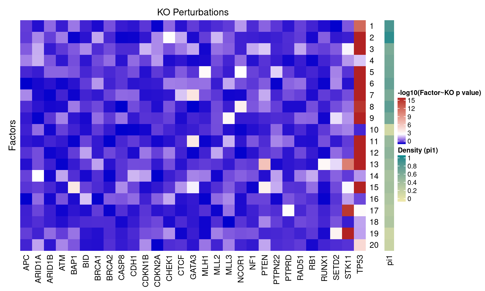
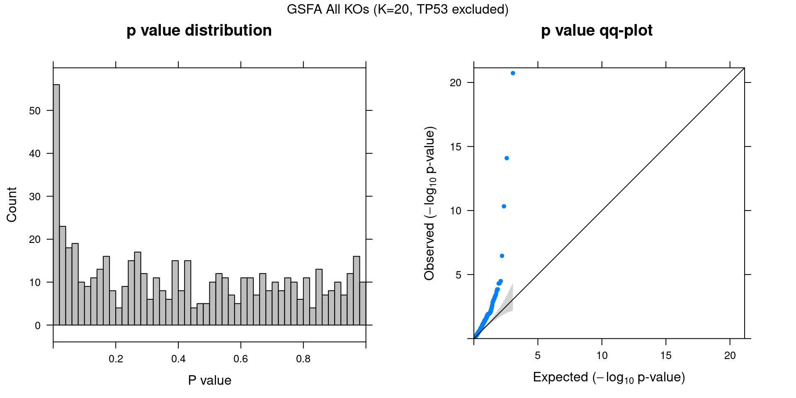
2.1.3 Beta PIP vs P-Value
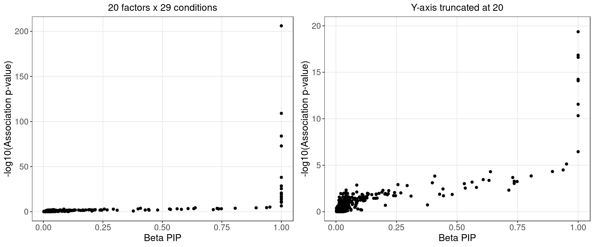
2.1.4 Local False Sign Rate (LFSR)
| KO | APC | ARID1A | ARID1B | ATM | BAP1 | BID | BRCA1 | BRCA2 | CASP8 | CDH1 |
| Num_genes | 0 | 0 | 0 | 0 | 0 | 0 | 0 | 0 | 0 | 0 |
| KO | CDKN1B | CDKN2A | CHEK1 | CTCF | GATA3 | MLH1 | MLL2 | MLL3 | NCOR1 | NF1 |
| Num_genes | 0 | 0 | 0 | 0 | 776 | 0 | 0 | 0 | 149 | 0 |
| KO | PTEN | PTPN22 | PTPRD | RAD51 | RB1 | RUNX1 | SETD2 | STK11 | TP53 | |
| Num_genes | 882 | 0 | 0 | 0 | 0 | 0 | 0 | 1370 | 5682 | NA |
2.2 Alternative Initializations and Chain Convergence
Other than initializing GSFA using truncated SVD, we also tried 2 runs with random initialization.
2.2.1 Association results for 2 randomly initialized GSFA runs
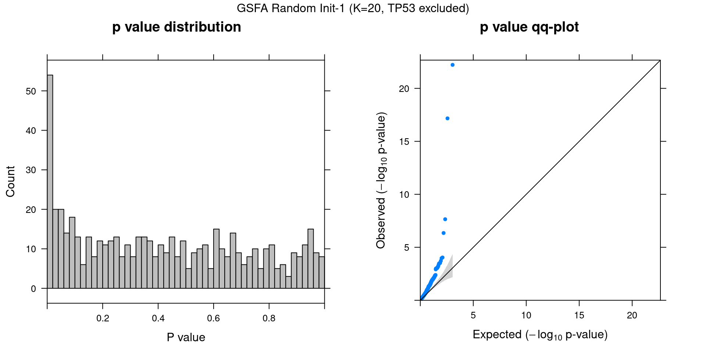
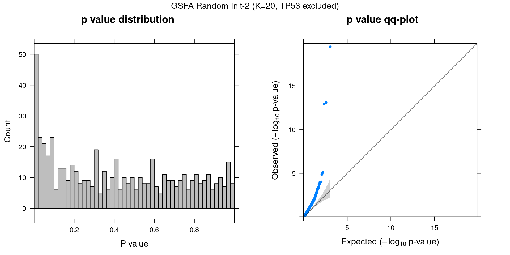
2.2.2 Chain mixing and convergence evaluation
To check the convergence of a certain scalar estimand, we adopt the potential scale reduction metric (\(\hat{R}\)) as described in Section 11.4 of Bayesian Data Analysis, 3rd ed.
The basic idea is to evaluate both the within-sequence variance and the between-sequence variance, and assess how close the two variances are.
If the potential scale reduction \(\hat{R}\) is close to 1, it means our inference has reached a good level of convergence;
if \(\hat{R}\) is high, then we have reason to believe that proceeding with further simulations may improve our inference on this estimand.
Since the order and sign of factors are intercahngeable, we focus on evaluating the estimation of all pairs of \(\beta_{m\cdot} \cdot W_{j\cdot}\) (a dot product that sums over all factors for each marker-gene pair).
We take the last 1000 stable samples from each of the 3 runs (1 SVD initialized, 2 randomly initialized). Each chain was further split into 2 halves, resulting in 6 chains with 500 iterations of samples each to assess convergence on.
The table below shows the summary of \(\hat{R}\) of \(\beta_{m\cdot} \cdot W_{j\cdot}\) across genes for a given KO condition \(m\):
| Min. | 1st Qu. | Median | Mean | 3rd Qu. | Max. | |
|---|---|---|---|---|---|---|
| APC | 0.999 | 1.00 | 1.00 | 1.00 | 1.00 | 1.01 |
| ARID1A | 0.999 | 1.00 | 1.01 | 1.01 | 1.01 | 1.08 |
| ARID1B | 0.999 | 1.00 | 1.00 | 1.00 | 1.01 | 1.01 |
| ATM | 0.999 | 1.00 | 1.00 | 1.00 | 1.00 | 1.04 |
| BAP1 | 0.999 | 1.00 | 1.00 | 1.01 | 1.01 | 1.10 |
| BID | 0.999 | 1.00 | 1.00 | 1.01 | 1.01 | 1.05 |
| BRCA1 | 0.999 | 1.00 | 1.00 | 1.01 | 1.01 | 1.02 |
| BRCA2 | 0.999 | 1.00 | 1.00 | 1.00 | 1.00 | 1.01 |
| CASP8 | 0.999 | 1.00 | 1.00 | 1.00 | 1.00 | 1.01 |
| CDH1 | 0.999 | 1.00 | 1.00 | 1.00 | 1.00 | 1.03 |
| CDKN1B | 0.999 | 1.00 | 1.00 | 1.00 | 1.01 | 1.02 |
| CDKN2A | 0.999 | 1.00 | 1.00 | 1.00 | 1.01 | 1.03 |
| CHEK1 | 0.999 | 1.01 | 1.02 | 1.02 | 1.02 | 1.12 |
| CTCF | 0.999 | 1.00 | 1.01 | 1.01 | 1.02 | 1.05 |
| GATA3 | 0.999 | 1.02 | 1.05 | 1.09 | 1.13 | 1.62 |
| MLH1 | 0.999 | 1.01 | 1.01 | 1.03 | 1.03 | 1.33 |
| MLL2 | 0.999 | 1.00 | 1.00 | 1.00 | 1.00 | 1.03 |
| MLL3 | 0.999 | 1.01 | 1.02 | 1.02 | 1.03 | 1.13 |
| NCOR1 | 0.999 | 1.01 | 1.03 | 1.04 | 1.05 | 1.29 |
| NF1 | 0.999 | 1.00 | 1.00 | 1.00 | 1.00 | 1.01 |
| PTEN | 0.999 | 1.01 | 1.04 | 1.07 | 1.10 | 2.13 |
| PTPN22 | 0.999 | 1.00 | 1.01 | 1.01 | 1.01 | 1.08 |
| PTPRD | 0.999 | 1.00 | 1.00 | 1.01 | 1.01 | 1.23 |
| RAD51 | 0.999 | 1.00 | 1.00 | 1.00 | 1.00 | 1.01 |
| RB1 | 0.999 | 1.00 | 1.01 | 1.01 | 1.02 | 1.04 |
| RUNX1 | 0.999 | 1.00 | 1.01 | 1.02 | 1.04 | 1.21 |
| SETD2 | 0.999 | 1.01 | 1.02 | 1.04 | 1.05 | 1.28 |
| STK11 | 0.999 | 1.02 | 1.04 | 1.06 | 1.09 | 1.54 |
| TP53 | 0.999 | 1.01 | 1.01 | 1.02 | 1.03 | 1.20 |
| offset | 1.000 | 1.05 | 1.10 | 1.12 | 1.17 | 1.65 |
2.2.3 Difference btw methods in factor estimation
For a pair of \(Z\) estimations from 2 inference methods, \(Z_1, Z_2\), we quantify the pairwise estimation difference as \(||Z_1Z_1^T - Z_2Z_2^T||_1/N^2\), where \(N\) is the number of rows (samples) in \(Z\).
Guided SVD vs Rand_01: 0.546
Guided SVD vs Rand_02: 0.441
Rand_01 vs Rand_02: 0.533
3 Unguided Result
3.1 Factor ~ KO Beta PIP
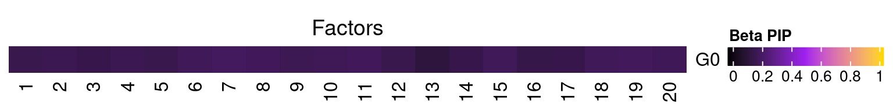
3.2 Factor ~ KO Posterior Association
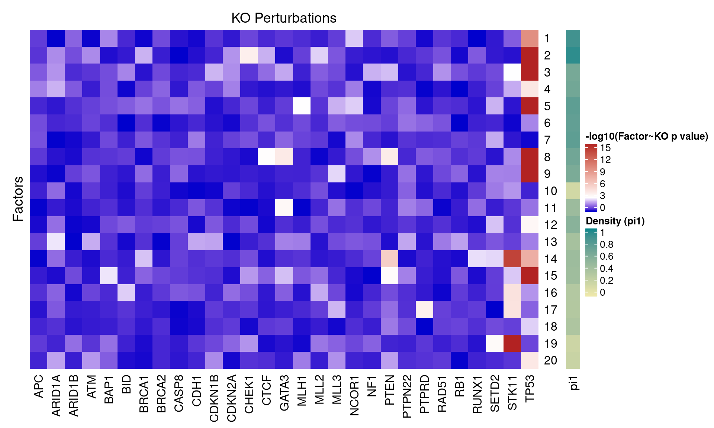
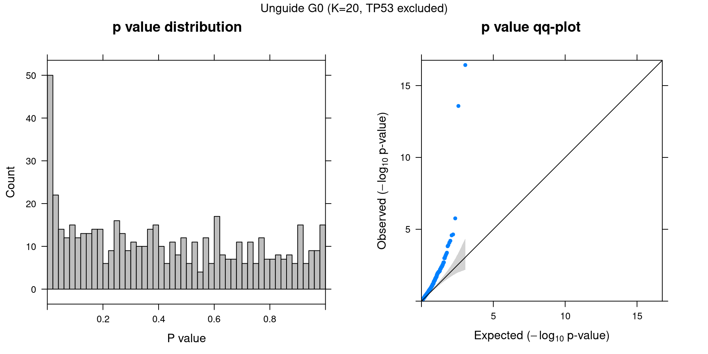
3.3 Unguided vs Guided
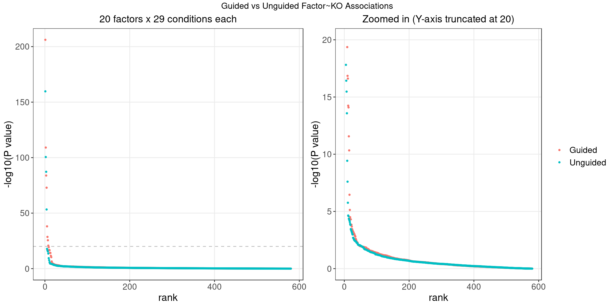
4 FLASH
4.1 Factor ~ KO Posterior Association

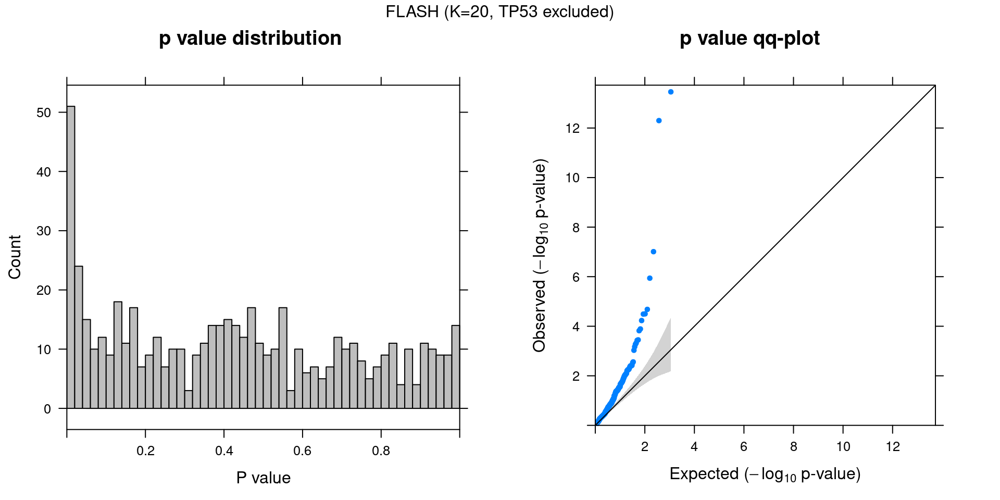
4.2 FLASH vs GSFA
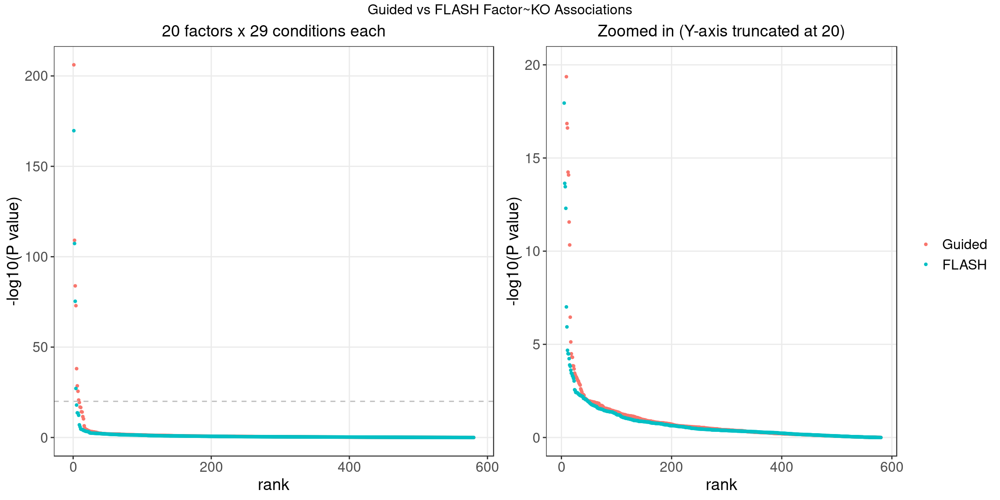
We matched the factors obtained from GFSA with those from FLASH, and conducted pairwise comparisons for both factors and gene loadings.
In the following heatmaps, factors are labeled by the KO condition(s) that they have an association p-value < 1e-3 with.
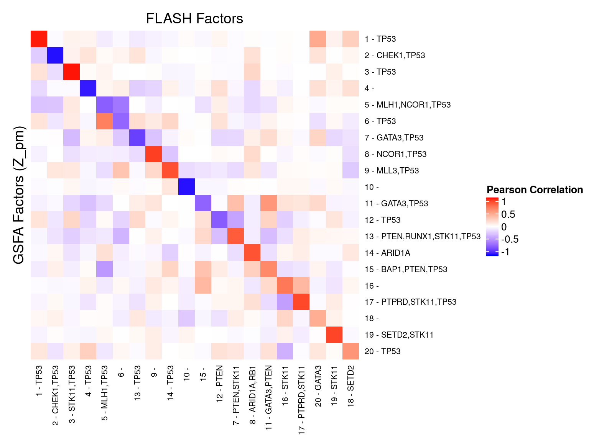
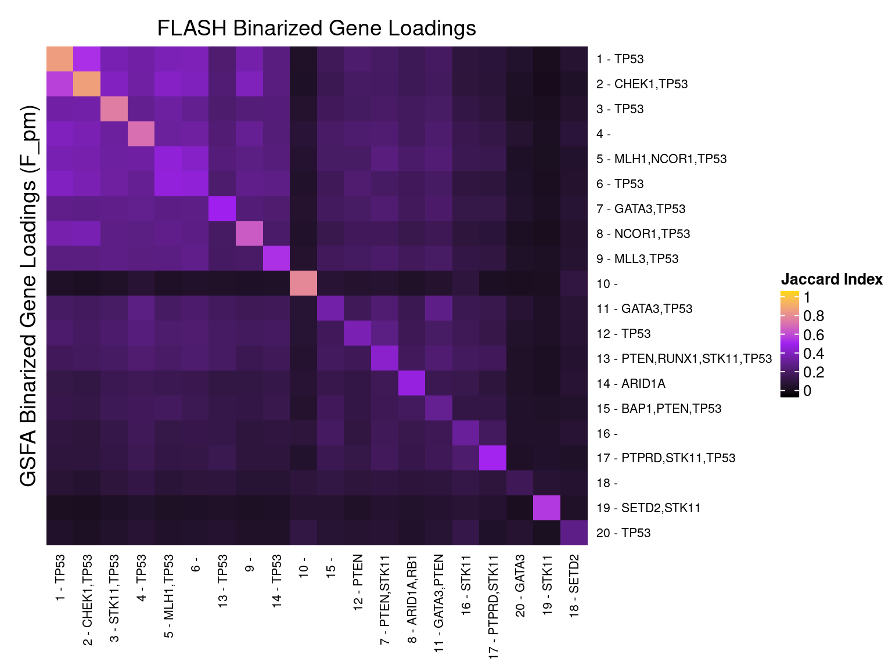
5 Gene Ontology Enrichment Analysis
Genes w/ non-zero loadings vs all genes selected for factor analysis.
GO category: Biological Process.
5.1 PIP cutoff at 0.5
GO terms that passed overrpresentation analysis fold change \(\geq\) 2 and q value \(<\) 0.05: